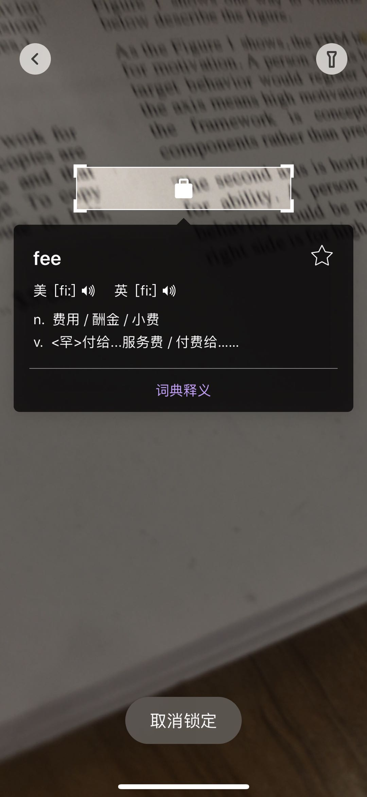
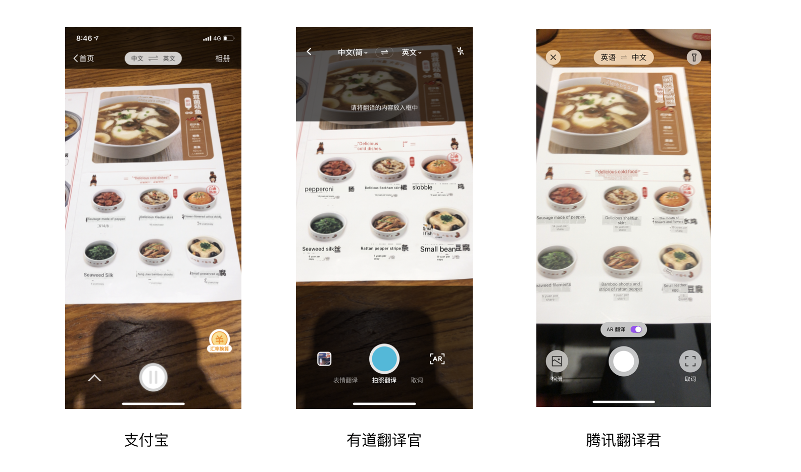
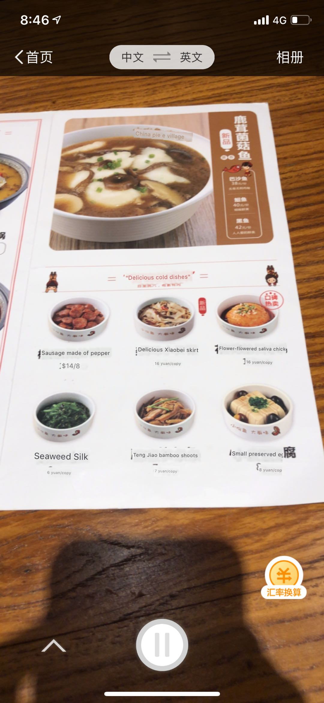
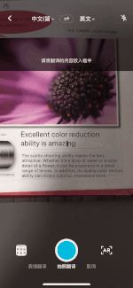

AR 实时翻译应用的比较性分析
2019.09.24
研究对象
这里，我研究了 3 款 AR 翻译应用的实景翻译功能，以了解当今 AR 实景翻译应用的特点和设计模式。
这 3 个应用分别是：
- 有道翻译官
- 支付宝扫一扫
- 腾讯翻译君
主要发现
交互模式
从这三款应用中，我们发现了一些AR 实景翻译交互模式：
无命令交互。摄像头会自动识别文字并自动翻译，用户不需要操作或给予命令。有道和腾讯也提供取词功能。用户可以使用取景器对准要翻译的信息。
基于空间信息的交互。镜头与周围空间上的变化会除非系统重新计算并给予反馈。有道对空间的敏感度比其他 2 款要高。
手势操作。手动放大缩小镜头，选择焦点。（支付宝不支持选择焦点，腾讯不支持放大缩小和选择焦点）
腾讯翻译君取词 
交互空间
腾讯和支付宝未全屏翻译。有道为局部，这可能跟技术实现相关。
信息呈现
三款应用在信息呈现方式上差异不大。翻译的文字样式和背景融合。翻译后的文字覆盖在原文字上，样式和大小和原文适配。这样做视觉更逼真。
使用场景
支付宝考虑到了用户在外旅游购物时，需要换算汇率，因此提供了汇率转换功能。这个功能的提供，能有效减少用户的操作和注意力的切换，也符合支付宝在支付上的品牌定位。
支付宝提供汇率翻译功能  <<<<<<< HEAD腾讯和有道的取词功能适用于学习和工作场景，符合工具产品的定位。
=======腾讯和有道作为工具应用，适用于学习和工作场景，因此设计了取词功能。
>>>>>>> 4e0c7f49f931053e218e57a1d0e32fbb59da1417反馈/帮助
在系统反馈上，支付宝和腾讯翻译君都给予了清晰的文字反馈，告知用户当前系统状态和给予操作上的提示。

网易翻译官无任何文字提示。
可用性问题
从这三款应用中，我们发现了一些可用性问题
系统根据空间发生变化重新计算，有时不符合用户需求，会中断用户的任务。当用户处于非静止状态时（如地铁上），系统会表现为不稳定。不过，拍照翻译功能能解决这个问题。
有些信息字体太小，可读性差。有些系统还不支持画面放大。不过，取词功能解决了这个问题。
总结
AR 翻译产品继承了 AR 产品常见的在体验上的优势-大大减少用户的操作次数和时间以及注意力的切换。通过细化场景，AR 翻译还有很多创新空间和设计机遇。
同时，它也存在 AI 产品常见的问题，不经用户主动发起选择而主动运行某些功能，让用户觉得受迫。
由于 ar 交互受环境影响较大，我们更应该注意给予用户信息上的反馈和支持。